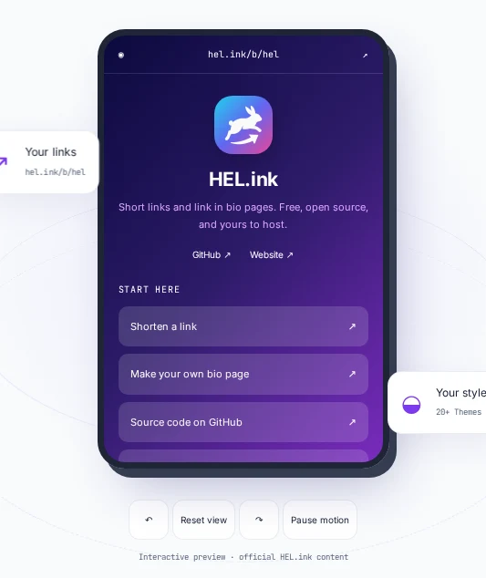
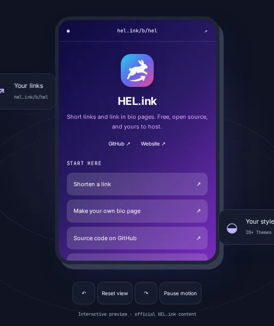
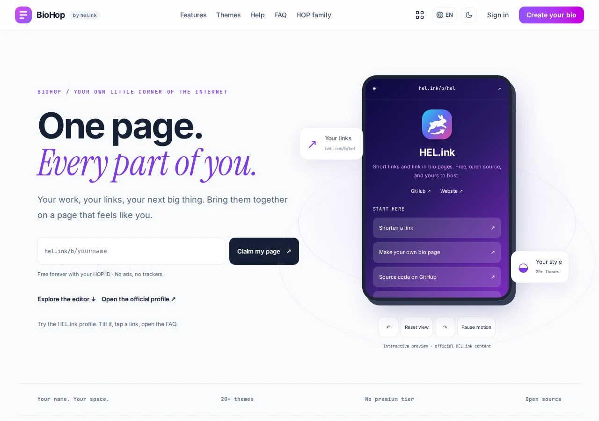
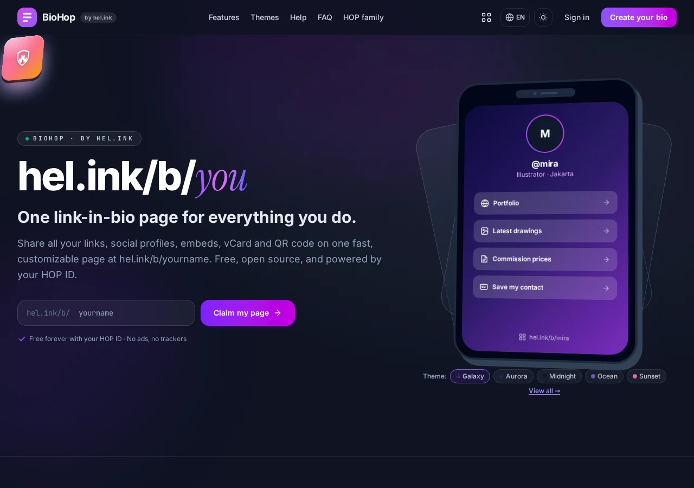

HOP · Link-in-bio
Tautan Anda, satu halaman, terbit dalam hitungan detik
BioHop mengubah satu halaman menjadi rumah Anda di web: tautan, embed, sosial, dan kode QR di hel.ink/b/{slug}, dikelola dari bio.hel.ink. Bisa di-host sendiri, open source, bagian dari keluarga HOP.
Alamat live di halaman ini mengarah ke situs publik keluarga HOP.


Coba BioHop ↗Yang dilakukan BioHop
- Halaman bio publik dengan QR dan pelacakan klik
Setiap halaman hidup di hel.ink/b/{slug}, punya kode QR sendiri, dan mencatat saat orang mengklik tautan Anda.
- Editor lengkap di /bio
Kelola halaman dan tautan, unggah gambar, avatar, ikon, dan logo QR, lihat pratinjau langsung, duplikasi halaman, dan baca analitik per halaman.
- Preset tema
Preset terang, gelap, minimal, neon, dan banyak lagi — dipakai bersama oleh editor, pratinjau, dan halaman publiknya.
- Satu kali masuk untuk semua aplikasi: HOP ID
Tidak ada pendaftaran lokal atau kata sandi di sini. Anda masuk sekali dengan HOP ID di hub. Atur HOP_HUB_URL, HOP_APP, dan secret SSO sebelum masuk.
- Analitik klik
Negara (GeoIP) plus deteksi perangkat, browser, dan bot untuk setiap klik.
- Perpendek tautan dengan LinkHop
“Shorten this URL” di blok memanggil API LinkHop dengan token layanan milik Anda sendiri. Jika LinkHop mati, blok tetap memakai URL aslinya.
- Keamanan URL dan konten
Perintah abuse:scan memeriksa halaman dan blok terhadap domain_blacklist bersama dari hop/safety, terjadwal setiap jam.
- Pembersihan privasi harian
Perintah privacy:prune menghapus data klik bio setiap hari, sehingga analitik tidak menumpuk selamanya.
Jalankan sendiri
Alamat live di halaman ini mengarah ke situs publik keluarga HOP.
BioHop


FAQ
Data apa yang dicatat dari satu klik?
Satu klik mencatat waktu, tautan, serta detail negara, perangkat, dan browser yang diturunkan. BioHop membersihkan data klik bio setiap hari dengan privacy:prune.
Apakah saya perlu mendaftar akun?
Tidak. Tidak ada pendaftaran lokal atau kata sandi di BioHop: Anda masuk dengan HOP ID di hub, sekali, lalu memakai semua aplikasi HOP.
Bisakah saya meng-host sendiri?
Ya. BioHop open source dengan lisensi MIT. Lihat README di GitHub untuk prasyarat dan quickstart; Anda mengatur URL hub, nama aplikasi, dan secret SSO sendiri.
Di mana melaporkan masalah?
Silakan buka issue di GitHub.
Keluarga HOP
BioHop adalah bagian dari keluarga aplikasi open source yang bisa di-host sendiri di balik hel.ink, bernama HOP.
| Aplikasi | Fungsinya | Alamat live | Kode |
|---|---|---|---|
| Hub | Portal akun, masuk HOP ID | hel.ink · hub.hel.ink | navi-crwn/HEL.ink |
| LinkHop | Pemendek URL | link.hel.ink · hel.ink/l/{slug} | navi-crwn/LinkHop |
| BioHop | Halaman link-in-bio | bio.hel.ink · hel.ink/b/{slug} | repo ini |
| PixelHop | Hosting gambar & media | pixel.hel.ink · p.hel.ink | navi-crwn/PixelHop |
| NoteHop | Catatan dan dokumen pribadi | note.hel.ink · n.hel.ink | navi-crwn/NoteHop |
Bantuan & isu
Menemukan bug atau hal yang belum jelas di dokumentasi ini? Buka issue di GitHub .